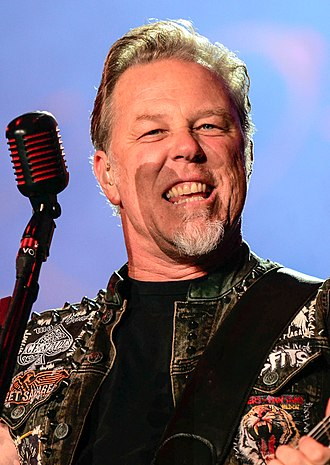
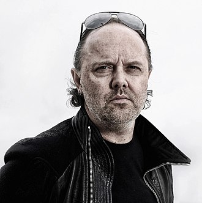
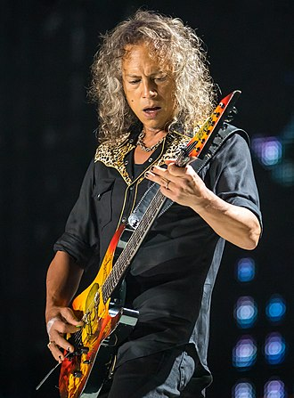
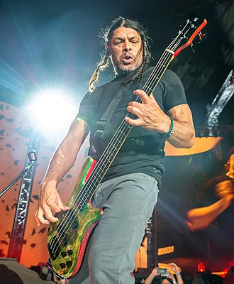

Membres
James Hetfield
James Hetfield est le fils d'un chauffeur de poids lourds du Nebraska et d'une chanteuse professionnelle, tous deux très croyants et membres de la Science chrétienne. Sa famille compte des ascendances anglaises, irlandaises, écossaises, et allemandes[réf. nécessaire]. La mort de sa mère, lorsqu'il est adolescent, le marque profondément. Il évoque d'ailleurs cette tragédie dans The God That Failed sur l'album éponyme Metallica, puis dans Mama Said sur l'album Load. C'est grâce à son frère David, son aîné de dix ans, qu'il s'initie à la guitare et accessoirement à la batterie. David Hetfield devient batteur et guitariste dans un groupe amateur spécialisé dans les reprises. James avait également pris quelques leçons de piano sous la pression de sa mère. N'étant guère disposé à suivre de longues études, James fait quantité de petits boulots tout en jouant dans d'éphémères formations locales (Obsession, Phantom Lord d'où le titre d'un morceau de Metallica...). Son premier groupe sérieux est « Leather Charm », jusqu’à sa rencontre avec Lars Ulrich par l'entremise d'une annonce postée dans le journal The Recycler. Lars a des contacts dans le monde du heavy metal, un de ses amis produit une compilation qui met en vedette des groupes locaux. Son ami accepte de lui garder une place sur l'album, mais Lars n'a pas encore de groupe. La volonté de James de vouloir paraître sur cet album lui fait accepter de former un groupe avec Lars, Metallica est né. Le 26 juin 1986, victime d'un accident de skateboard, Hetfield se fracture le poignet. Il ne peut que chanter et se fait remplacer par John Marshall, un roadie de Metallica. Le 8 août 1992, il subit un nouvel accident au stade olympique de Montréal lorsqu'un effet pyrotechnique explose littéralement sous ses pieds. James gravement brûlé à la main, au bras gauche, au visage et au dos, est rapidement transporté à l'hôpital. Guns N' Roses est en seconde partie de ce concert. Au bout de sept chansons, Axl Rose interrompt le concert, le public se révolte et entreprend de démolir le stade. John Marshall le remplace une nouvelle fois à la guitare, James continue à chanter pour finir la tournée. Après une longue physiothérapie, James peut à nouveau jouer de la guitare. En 2009 Hetfield est classé 8e dans le livre de Joel McIver, The 100 Greatest Metal Guitarists1. Il figure également à la 24e place dans la liste des "Meilleurs chanteurs de Metal de tous les temps" du magazine Hit Parade.

Lars Ulrich
Le père de Lars, Torben Ulrich, était un joueur de tennis professionnel danois. Il était également musicien, et avait joué avec des grands noms du jazz tels que Stan Getz et Miles Davis. Le parrain d'Ulrich était d'ailleurs une autre légende du jazz, Dexter Gordon. Il poussa Lars Ulrich à apprendre le jazz étant enfant. En février 1973, Torben Ulrich obtint cinq places (destinées à quatre de ses amis et lui) pour un concert de Deep Purple, au stade de Copenhague. Apprenant que l'un des amis ne pourrait pas venir, Torben décida de faire profiter du concert son jeune fils, âgé alors de 9 ans2. Le jeune Ulrich fut très impressionné par la prestation du groupe, et acheta l'album Fireball le lendemain. Cette première approche de la musique eut un impact considérable sur Lars Ulrich, provoquant son entrée dans le monde du rock et plus tard du heavy metal. Lars Ulrich obtient sa première batterie en 1977, offerte par sa grand-mère3. Il épousera définitivement le destin de rockstar en cofondant Metallica en 1981 après avoir passé une audition pour James Hetfield et Ron McGovney en tant que batteur. Durant l'audition, il fut une première fois refusé car James Hetfield ne le trouvait pas assez bon. Lors d'un deuxième passage, Lars montra toute l'étendue de son talent et James Hetfield l'accepta alors sans hésitation.

Kirk Hammett
Kirk Hammett est né à San Francisco d'une mère originaire des Philippines et d'un père irlandais travaillant dans le transport maritime. Alors qu'il travaillait dans un Burger King pour payer son matériel de musique, Kirk devint élève dans une école de musique dont un des professeurs est le guitariste soliste Joe Satriani. Il commence sa carrière de guitariste en 1981 en cofondant le groupe Exodus qu'il quitte en 1983 avant l'enregistrement de leur premier album pour rejoindre Metallica qui vient de renvoyer Dave Mustaine juste avant l'enregistrement de leur premier opus, Kill 'Em All. Dave Mustaine fondera par la suite le groupe Megadeth, qui sera cité dans les « Big Four » du thrash metal. Kirk Hammett est depuis le guitariste soliste du groupe. Il a influencé des milliers de guitaristes dans le monde avec son style de solo reconnaissable par son phrasé et sa technique. Son style est passé, au cours de sa carrière, du thrash metal de Kill 'em All à la technique « progressive » de ...And Justice for All, en passant par le heavy metal sur Metallica, Load et ReLoad, et même des morceaux de country rock (sur Low Man's Lyric et Mama Said). En novembre 2005, Kirk seconde Carlos Santana à la guitare sur son album All that I am (à noter aussi la collaboration de Steven Tyler d'Aerosmith). Kirk a été nommé onzième meilleur guitariste de tous les temps par le magazine Rolling Stone. Il interprète une des dix-neuf versions de Daisy Bell reprises sur l'album concept sorti le 13 mai 2014, The Music Gay Nineties Old Tyme: Daisy Bell, initié par le peintre Mark Ryden2. Le clip de la chanson reprend des séquences du film Le Triomphe de la volonté de Leni Riefenstahl.

Robert Trujillo
Robert Trujillo est né le 23 octobre 1964 à Santa Monica en Californie aux États-Unis. Sa mère vient de Durango, au Mexique. Enfant, il regardait son père jouer du flamenco sur une guitare. Il essayait de l'imiter mais y arrivait plus aisément avec une basse. Trujillo étudia à la Culver City High School. Il commence à jouer avec Suicidal Tendencies, un groupe fondé au début des années 80 à Venice en Californie. Il rejoint ce groupe en 1989 pour l'enregistrement de Controlled By Hatred/Feel Like Shit... Trois ans plus tard, le groupe fait la première partie de Metallica. Accompagné de Mike Muir, leader de Suicidal Tendencies, Rob décide de fonder le groupe Infectious Grooves. Puis, avant de rejoindre un des précurseurs du heavy metal, Ozzy Osbourne, il travaille avec Jerry Cantrell, guitariste d'Alice in Chains, sur un projet solo. En 2009, il participe à des concerts de Rodrigo y Gabriela en tant que bassiste pour leur reprise de Orion.
